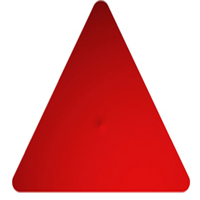

DESCRIPCION DEL TRIANGULO
El triángulo es un polígono de tres lados que da origen a tres vértices y tres ángulos internos. Es la figura más simple, después de la recta en la geometría. Como norma general un triángulo se representa con tres letras mayúsculas de los vértices (ABC). Los triángulos son las figuras geométricas más importantes, ya que cualquier polígono con un número mayor de lados puede reducirse a una sucesión de triángulos, trazando todas las diagonales a partir de un vértice, o uniendo todos sus vértices con un punto interior del polígono.
Es importante destacar que de entre todos los triángulos sobresale el triángulo rectángulo cuyos lados satisfacen la relación métrica conocida como teorema de pitagora.
Herón de Alejandría fué un ingeniero y matemático griego que vivió durante el siglo I aC, éste escribió una obra llamada La Métrica, donde se dedicó al estudio de los volúmenes y áreas de distintas superficies y cuerpos. Pero sin duda lo más importantes realizado por éste matemático fue la conocida Fórmula de Herón, ésta se encarga de relacionar directamente la zona de un triángulo con las longitudes de sus lados.
Un triángulo rectángulo consiste en un ángulo de 90° y dos ángulos agudos. Cada ángulo agudo de un triángulo rectángulo tiene las funciones de seno, coseno y tangente. Éstas a su vez, son puntos ubicados en dos de las tres patas de un triángulo rectángulo.
El seno de un ángulo es la relación entre la longitud de la pierna opuesta del ángulo dividida por la longitud de la hipotenusa.
El coseno de un ángulo es la relación entre la longitud de la pierna adyacente al ángulo dividido por la longitud de la hipotenusa.
La tangente de un ángulo es la relación entre la longitud de la pierna opuesta del ángulo dividida por la longitud del lado adyacente del ángulo.